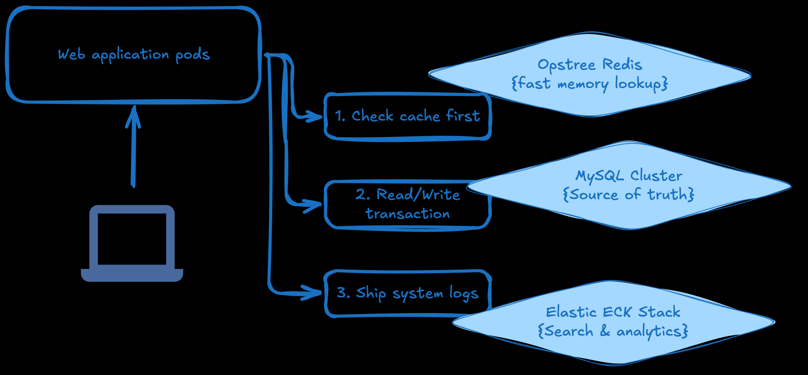

A modern platform team
Imagine you run a K8s platform for an enterprise. Instead of filling an IT ticket and waiting weeks for a dedicated storage drive, developer teams use your Multi-Tenant S3-Compatible Storage-as-a-Service:
-
The DevOps Team applies a small manifest asking for an S3 bucket to store automated daily database backups.
-
The Data Science Team requests a massive, high-throughput S3 bucket to feed raw data into an AI model training pipelines.
The operator instantly partitions the underlying hardware, configures separate encryption keys via cert-manager, applies resource limits, and hands both teams a unique URL endpoint. Both teams write code using the exact same standard AWS S3 libraries, entirely unaware they are sharing the exact same physical servers underneath.
| Would you like to see how MinIO or Rook-Ceph isolates tenants using K8s namespaces, or look at a sample IAM policy used to control S3 bucket access? |

The application flow (regarding checking cache, asking database, and storing logs).
- Inside architecture of our application
-
-
We can use Oracle/Percona MySQL when we need a bulletproof, transactional source of truth for critical business data (e.g., user profiles, financial ledgers, shopping carts).
-
Opstree Redis when require a blazing-fast caching layer, session store, or message broker to sit in front of our database and offload heavy traffic.
-
ECk is an analytics and observability engine to parse millions of application logs, infrastructure metrics, or power deep search bar inside our website.
-